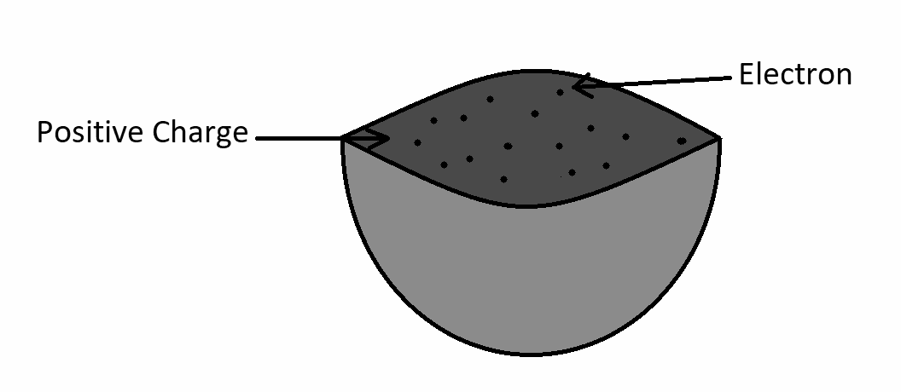
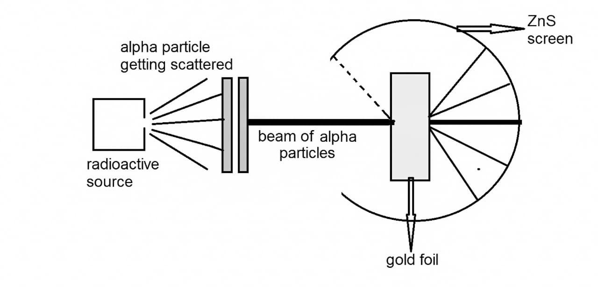
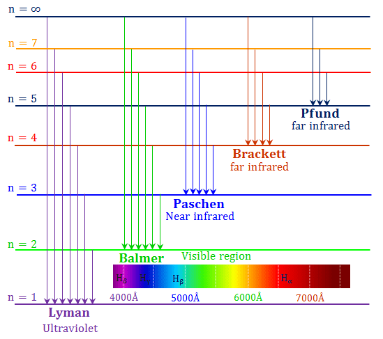

📘 Unit 8(A) - Atomic Models
Q: Describe Thomson's atomic model.
J. J. Thomson proposed a model of the atom in 1904, known as the plum-pudding model.
 Its main postulates are as follows—
Its main postulates are as follows—
This model attempted to explain the stability and charge distribution of the atom, but it was later proved false by Rutherford's experiment.

- An atom is a sphere of positive charge uniformly spread throughout its volume.
- Negative electrons are embedded within this positive sphere just like plums in a pudding.
- The atom is electrically neutral because the positive and negative charges are equal.
This model attempted to explain the stability and charge distribution of the atom, but it was later proved false by Rutherford's experiment.
Q: State one important conclusion of Thomson's atomic model.
The mass and the positive charge of the atom are distributed uniformly throughout the sphere.
Q: State any two drawbacks of Thomson's atomic model.
Thomson's atomic model has the following drawbacks—
- This model could not explain the scattering of α-particles by atoms.
- This model could not explain the spectrum of the hydrogen atom.
Q: Name the experiment performed by Rutherford regarding atomic structure.
The experiment performed by Rutherford is the alpha-particle scattering (α-particle scattering) experiment.
Q: Describe Rutherford's alpha-particle scattering experiment.
Ernest Rutherford performed this experiment to understand the structure of the atom.
Method of the experiment:
Beams of alpha particles were directed onto a gold foil. After passing through the foil, the alpha particles struck a ZnS screen producing a flash of light, which was observed at various angles.
Observations:

Conclusions:
Based on this experiment, Rutherford proposed his atomic model.
Method of the experiment:

Observations:
- Most of the alpha particles passed straight through.
- Some alpha particles were deflected through small angles.
- Very few alpha particles bounced back.
Conclusions:
- Most of the volume of the atom is empty space.
- At the centre of the atom lies a small, dense, positively charged nucleus.
- Almost the entire mass of the atom is concentrated in the nucleus.
Based on this experiment, Rutherford proposed his atomic model.
Q: Who discovered the nuclear model of the atom?
The scientist Rutherford discovered the nuclear model of the atom.
Q: State the main postulates of Rutherford's atomic model.
OR
State the conclusions obtained from the alpha-particle scattering experiment. (2024)
OR
State the conclusions obtained from the alpha-particle scattering experiment. (2024)
Based on the alpha-particle scattering experiment, Rutherford proposed his atomic model.
 According to Rutherford's atomic model—
According to Rutherford's atomic model—
- At the centre of the atom lies an extremely small, dense, and positively charged nucleus.
- Almost the entire mass of the atom is concentrated in the nucleus.
- The size of the nucleus is very small compared to the size of the atom, so most of the atom's volume is empty space.
- Electrons revolve around the nucleus.
- The atom is electrically neutral because the positive charge of the nucleus is equal to the negative charge of the electrons.
Q: How is the size of the nucleus estimated from Rutherford's scattering experiment?
From Rutherford's scattering experiment, the size of the atomic nucleus can be estimated by finding the initial kinetic energy of an α-particle scattered at \(180^\circ\). In this situation, the entire kinetic energy of the α-particle is converted into electrostatic potential energy.
(The source notes do not give any further calculation/formula at this point — in the original document this answer ends here.)
Q: State any two drawbacks of Rutherford's atomic model.
Main drawbacks of Ernest Rutherford's atomic model—
- Could not explain the stability of the atom - According to physics, a revolving electron radiates energy, which means it should eventually fall into the nucleus, whereas in reality the atom is stable.
- Could not explain the line spectrum - This model failed to explain the line spectrum of atoms such as hydrogen.
Q: State the postulates of Bohr's atomic model. (2019/23/26)

- Instead of revolving in any arbitrary orbit around the nucleus, an electron revolves only in certain specific orbits. These orbits are called stationary orbits, because an electron revolving in these orbits does not emit any energy.
- An electron can revolve only in those orbits for which its angular momentum about the nucleus is an integral multiple of \(\dfrac{h}{2\pi}\). That is,
$$ mvr=\frac{nh}{2\pi} $$where \(h\) is Planck's constant.
- When an electron makes a transition from a higher-energy outer orbit to a lower-energy inner orbit, the difference in the electron's energy between these orbits is emitted as electromagnetic radiation. On the other hand, if an electron makes a transition from a lower-energy inner orbit to a higher-energy outer orbit, the difference in energy between the two orbits is absorbed as electromagnetic radiation.
- When an electron revolves in a circular orbit, for dynamic equilibrium, the Coulomb force acting between the electron and the nucleus provides the centripetal force required for motion along the circular path.
Q: What is Bohr's quantum condition for the orbit of an electron?
According to this condition, an electron can revolve only in those orbits for which its angular momentum about the nucleus is an integral multiple of \(\dfrac{h}{2\pi}\). That is,
$$
mvr=\frac{nh}{2\pi}
$$
where \(h\) is Planck's constant.
Q: How is Bohr's orbital quantum condition verified using the de Broglie wave concept? Explain.
According to de Broglie, the circumference of an electron's orbit in an atom must be equal to an integral multiple of the wavelength of the matter wave associated with the electron revolving in it.
If an electron of mass \(m\) is revolving with velocity \(v\) in an orbit of radius \(r\), then the de Broglie wavelength of the matter wave associated with the electron is \(\lambda=\dfrac{h}{mv}\), and the circumference of the orbit is \(=2\pi r_n\).
According to de Broglie,
If an electron of mass \(m\) is revolving with velocity \(v\) in an orbit of radius \(r\), then the de Broglie wavelength of the matter wave associated with the electron is \(\lambda=\dfrac{h}{mv}\), and the circumference of the orbit is \(=2\pi r_n\).
According to de Broglie,
$$
2\pi r_n = n\lambda \quad \text{where } n=1,2,3,\ldots
$$
$$
2\pi r_n = \frac{nh}{mv}
$$
$$
mvr_n = \frac{nh}{2\pi}
$$
This is Bohr's orbital quantum condition.
Q: What is meant by a stable orbit in Bohr's atomic model?
Stable orbits are those orbits in which the angular momentum of an electron is a whole-number multiple of \(\dfrac{h}{mv}\).
(This line has been kept exactly as it appeared in the source document; note that here the formula is \(\frac{h}{mv}\), whereas in other questions the angular-momentum condition is given as an integral multiple of \(\frac{h}{2\pi}\) — this inconsistency exists in the original source itself and has not been corrected.)
Q: What would happen if the electron in an atom were stationary?
An electron's revolution in a circular path within an orbit is possible because of the centripetal force, which is balanced by the electrostatic force of attraction acting between the positive charge of the nucleus and the electrons. If the electron were stationary, then in the absence of the centripetal force, the electron would fall into the nucleus due to the electrostatic force of attraction.
Q: Explain the spectrum in the Bohr model.
According to the Bohr model—
- An electron in an atom can revolve only in certain fixed orbits. The energy of these orbits is fixed.
- When an electron moves from a higher-energy orbit to a lower-energy orbit, the difference in energy is emitted as a photon.
- The frequency/wavelength of the emitted photon is fixed, so a line spectrum is obtained.
- When electrons come from various higher orbits to the same fixed orbit, the resulting spectral lines together form a series.
Q: What are the main spectral series of the hydrogen atom?
- Lyman series - When the electron of a hydrogen atom comes from any higher-energy orbit to the \(n=1\) orbit, the spectral lines obtained are called the Lyman series. This series is found in the ultraviolet region.
- Balmer series - When an electron makes a transition from higher-energy orbits to the \(n=2\) orbit, the spectral lines formed are called the Balmer series. This series is found in the visible region.
- Paschen series - When an electron comes from higher energy levels to the \(n=3\) orbit, the resulting spectrum is called the Paschen series. It lies in the infrared region.
- Brackett series - When an electron comes from a higher-energy orbit to the \(n=4\) orbit, the spectral lines formed are called the Brackett series. This too is found in the infrared region.
- Pfund series - When an electron makes a transition from higher-energy orbits to the \(n=5\) orbit, the resulting spectral lines are called the Pfund series. This series is also found in the infrared region.

Q: What do you understand by excitation energy?
The energy required to move an electron of an atom from the lowest energy state to a higher energy state is called excitation energy.
This energy is generally expressed in electron-volts (eV).
This energy is generally expressed in electron-volts (eV).
Q: What is the value of the first excitation energy of the hydrogen atom?
The energy required to move the electron in a hydrogen atom from the \(n=1\) orbit to the \(n=2\) orbit is called the first excitation energy.
First excitation energy of the hydrogen atom = 10.2 eV
First excitation energy of the hydrogen atom = 10.2 eV
Q: Define ionization energy.
The minimum energy required to completely remove an electron in the ground state of an isolated atom from the atom is called the ionization energy.
Q: What is the value of the ionization energy of the hydrogen atom?
The energy required to move the electron in a hydrogen atom from the \(n=1\) orbit to infinite distance (\(n=\infty\)) is its ionization energy.
Ionization energy of the hydrogen atom = 13.6 eV
Ionization energy of the hydrogen atom = 13.6 eV
Q: State two drawbacks of Bohr's atomic model.
The drawbacks of Bohr's atomic model are as follows—
- Bohr's model can explain the spectra of only single-valence-electron atoms/ions such as \(He^+\), Li, Na, K, etc.
- This model could not explain the fine structure of the spectrum.